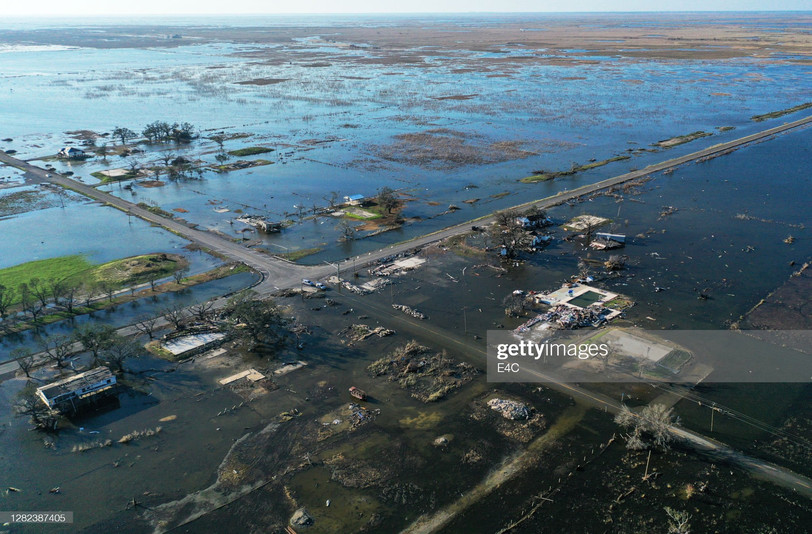

The United States' Increasing Issue Regarding Natural Disasters
In this year, the U.S. is already facing billions of dollars in damages resulting from the increased frequency of natural disasters.
By: Climate Matters
October 11th, 2022

KEY CONCEPTS
• As of this month, the U.S. has experienced 15 billion-dollar weather and climate disasters so far in 2022—already well above the historical average of seven events per year.
• This year's mounting extreme weather costs reflect an increasing trend in U.S. billion-dollar disasters since 1980.
• The frequency of billion-dollar disasters has also increased. In the last five years (2017-2021), there were just 18 days on average between billion-dollar disasters—compared to 82 days in the 1980s.
• Less time between disasters can mean less time and resources available to respond, recover and prepare for future events.
• The full toll of such events—including the impacts on health—can't be captured in any one statistic. Without rapid cuts in heat-trapping emissions, this toll is likely to keep rising.
• As of this month, the U.S. has experienced 15 billion-dollar weather and climate disasters so far in 2022—already well above the historical average of seven events per year.
The devastation wrought by Hurricanes Fiona and Ian in Puerto Rico,
Florida, and beyond has once again thrust weather and climate disasters to
the forefront of the nation's attention.
According to NOAA, the U.S. has experienced 15 weather and climate
disasters with losses exceeding $1 billion each in 2022 (as of September
30). The total cost of these disasters through the end of September was
$29.3 billion. Adding up the final costs will take months after the end of
the year to complete.
The costly and deadly billion-dollar disasters of 2022 so far have
included: an April tornado outbreak in the Southeast that spawned 88 tornadoes,
including several intense, long tracked tornadoes in Georgia and South
Carolina, a May hail storm that left large swaths of golf-ball sized hail across
Minnesota, Wisconsin and South Dakota, a destructive derecho that produced widespread 70+ mph wind gusts across the lower Midwest.
The costs of Hurricane Fiona and Hurricane Ian are still being accounted
for as ongoing recovery continues. Historically, hurricanes and tropical
cyclones are the most costly disasters by far, averaging $21 billion per
event—more than double the average toll of the next most costly event type
(drought).
More Disasters
This year's mounting extreme weather costs reflect an increasing trend in
billion-dollar disasters across the U.S. Each decade since the 1980s has
experienced more billion-dollar disasters and higher costs than the decade
before.
Over the last five years (2017 to 2021) alone, a total of 89 events caused
an estimated 4,557 deaths and over $788 billion dollars in damage. That's
about 35% of the $2.27 trillion in total costs of U.S. billion-dollar
disasters from 1980-2021.
2022 is the eighth consecutive year with 10 or more billion-dollar weather
and climate-related disasters. The long-term (1980-2021) annual average is
about seven billion-dollar disasters per year. And 2022 follows the
record-shattering annual totals of 22 and 20 billion-dollar disasters in
2020 and 2021, respectively.
Credit: NBC News
More Often
It's not just the total number of disasters—but how often they occur—that
strains the resources available for communities to manage risks and
recover quickly.
Between 1980-2021, the time between billion-dollar disasters in a calendar
year has dropped steadily, according to an analysis by Climate Central.
The average time between billion-dollar disasters has dropped from 82 days
in the 1980s to 26 days in the 2010s.
In the last five years (2017-2021), there have been just 18 days on
average between billion-dollar disasters.
During 2020, there were as little as two weeks on average between the
record 22 billion-dollar disasters that year.
Less time between disasters can mean less time and resources available to
respond, recover and prepare for future events.
The highest costs have resulted when multiple disasters occur in the same
region and season, straining local resources—as during the Atlantic
hurricane seasons of 2005 and 2017. According to NOAA, multiple billion-
dollar tropical cyclones during these two seasons resulted in more than
5,000 lives lost and over $520 billion in combined damages.
Visualization of the frequency and cost of natural disasters over the years
Credit: National Oceanic and Atmospheric Administration
The full toll of disasters
These staggering figures primarily reflect direct impacts on assets
(including damage to homes, crops, and critical infrastructure), and
therefore don't reflect the full toll of disasters, including on public
health—and especially mental health. According to the American Public
Health Association, up to 54% of adults and 45% of children suffer
depression after a disaster.
Weather and climate-related disasters can also result in widespread power
outages (as occurred in Puerto Rico after Hurricane Fiona), displacement,
and limited or unsafe food and water supplies, as well as loss of cultural
heritage, biodiversity and habitats.
These figures also don't convey the disproportionate impacts of disasters
on people in poverty or the need for equitable allocation of federal
disaster assistance in accordance with social vulnerability.
Disasters in a warming world
According to the latest IPCC reports, it is an “established fact” that
human-caused greenhouse gas emissions have “led to an increased frequency
and/or intensity of some weather and climate extremes since pre-industrial
times.” And these trends are projected to continue with additional
warming.
The ambition of the Paris Agreement—to limit warming to 2.7°F (1.5 °C) by
2100—is very likely to be exceeded by the mid-2040s at the latest without
rapid emissions cuts. In November, nearly 200 nations will convene at the
United Nations Climate Change Conference (COP27) to accelerate climate
action. Without such progress, we can expect even more frequent and
intense billion-dollar disasters in the future.